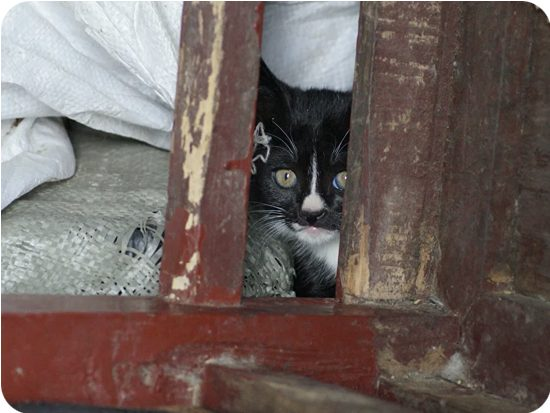
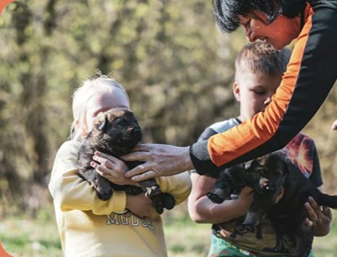
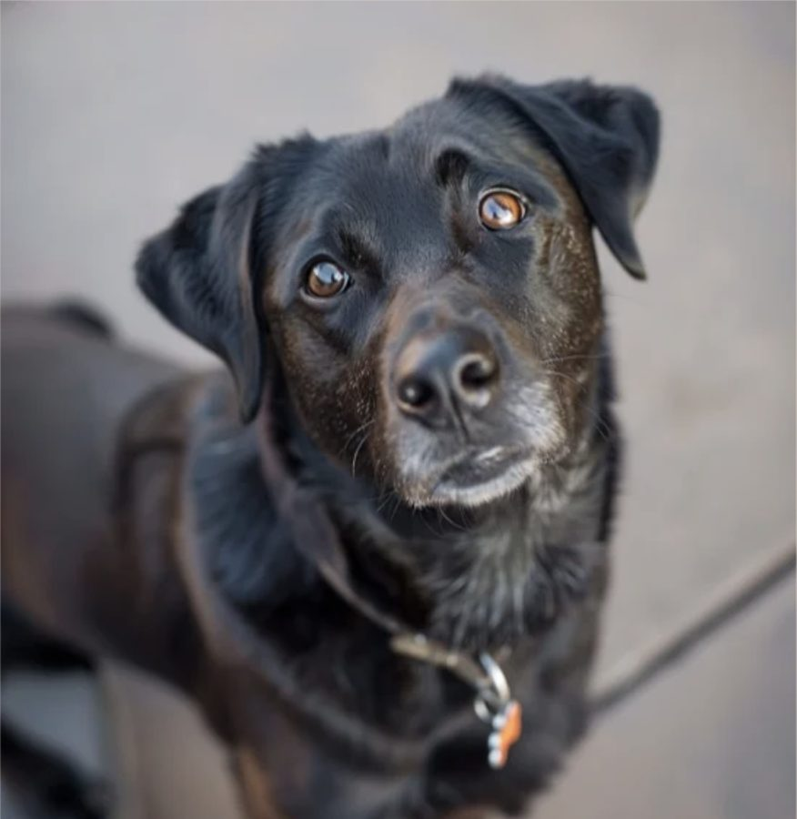
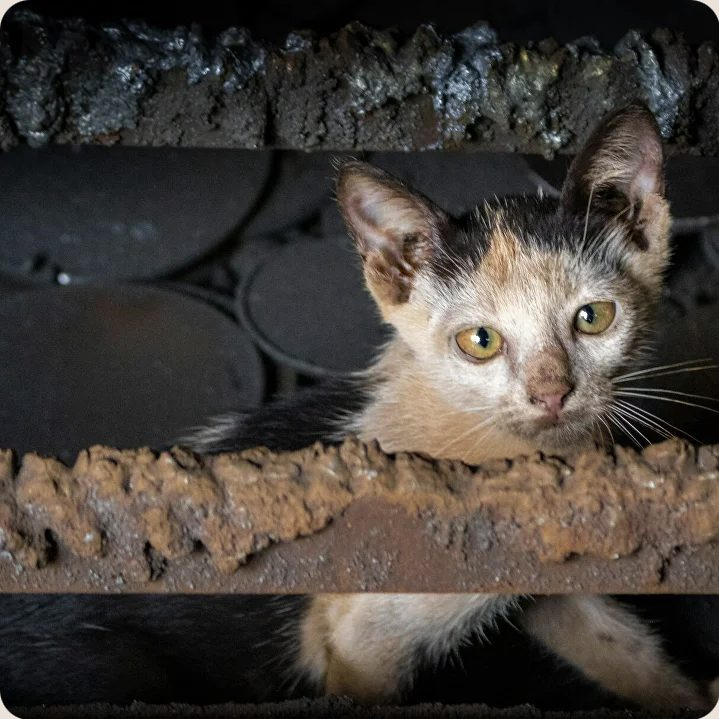

Истории спасения
Наши истории

Кася
«Я совсем маленькая, но уже очень жду свою семью» 🐾
Когда-то я была совсем одна и не знала, где буду спать завтра. Теперь я в приюте — здесь меня кормят, согревают и заботятся обо мне. Но больше всего мне не хватает одного — своего человека.
Я маленькая, любопытная и очень хочу играть, мурлыкать и засыпать рядом с тем, кто будет любить меня каждый день.
Мне не нужен идеальный дом. Мне нужен просто человек, который однажды посмотрит на меня и скажет: «Вот он. Это мой котёнок». Может быть, этим человеком станете именно вы?
Подарите мне не просто дом — подарите мне семью.

Малыши
«Нас несколько, но мечта у нас одна — найти свой дом» 🐾
Мы ещё маленькие и только учимся познавать этот большой мир.
Мы играем друг с другом, смешно бегаем, спим, свернувшись клубочком, и каждый день надеемся, что однажды за нами придут.
Мы мечтаем о тёплом доме, мягком диване, вкусном ужине и человеке, которому можно доверять. Возможно, вы не сможете забрать нас всех. Но даже если вы подарите дом одному из нас — для этого маленького сердца изменится весь мир.
Пожалуйста, дайте нам шанс вырасти любимыми.

Рики
«Я умею любить, даже если меня однажды забыли»
Я не знаю, почему однажды оказался в приюте. Но я знаю одно: я всё ещё верю людям.
Я радуюсь каждому, кто подходит ко мне. Виляю хвостом, стараюсь быть хорошим и мечтаю о простых вещах: своей миске, тёплом месте для сна, прогулках и человеке, который больше никогда меня не оставит.
Говорят, собака — лучший друг человека. Я готов стать именно таким другом. Мне очень нужен человек, который даст мне шанс начать новую жизнь.
Может быть, именно рядом с вами я наконец-то пойму, что такое настоящий дом? 🐾
Процесс спасения

Поиск и спасение
Мы активно ищем животных, нуждающихся в помощи, и организуем их спасение.

Первичный осмотр и лечение
После спасения животные проходят первичный осмотр ветеринаров и получают необходимое лечение.

Реабилитация и социализация
Мы работаем над восстановлением здоровья животных и их адаптацией к жизни в новом доме.
Азбука доброты
Два слова, ради которых работает наш приют:
- Верный друг
- Так мы называем каждого питомца: собака и кошка помнят добро и отвечают на заботу преданностью и любовью на всю жизнь.
- Защита животных
- Забота о тех, кто не может постоять за себя: спасение, лечение, дом и ответственность за каждого, кого мы приручили.
Каждый хвостик ждёт своего человека
Заберите питомца домой, станьте волонтёром или помогите приюту пожертвованием.